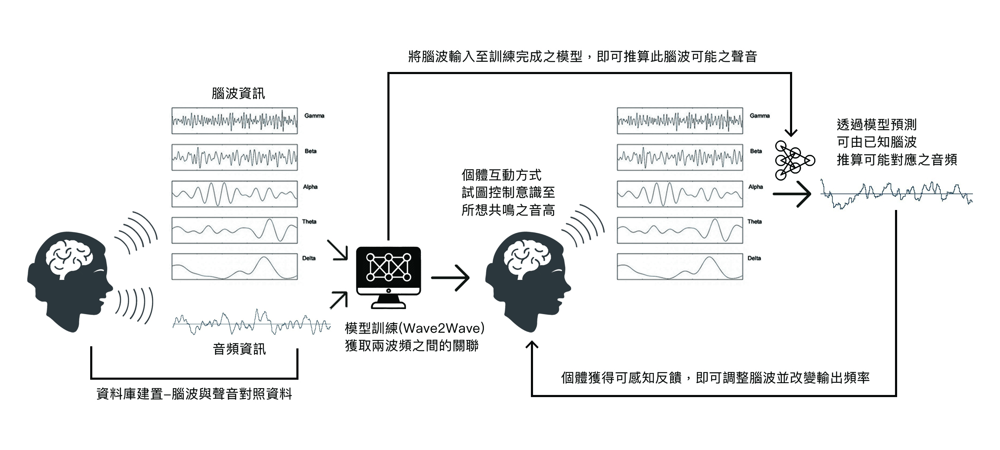

EEG Signal Processing
Cognitive Mediation
Signal Culture
Wave-to-Wave Translation
MLP Classification
Back to Unity is developed as a media study inquiry into how consciousness becomes perceptible through technical mediation. Contemporary digital platforms claim to “connect” individuals, yet—as Sherry Turkle notes—produce a paradoxical form of networked solitude. This project treats such dissatisfaction not as an emotional issue but as a media problem: language-based communication compresses experience into symbolic structures, generating loss, distortion, and fragmentation.
The proposal asks: What happens when consciousness is not represented through symbols, but transduced as signal? Drawing on Roy Ascott’s concept of the Telematic Embrace and McLuhan’s proposition that “the medium shapes the scale and form of human association,” Back to Unity investigates whether EEG signals—rather than text, voice, or images—can operate as a new medium for intersubjective communication.
This research does not pursue metaphysics; instead, it frames consciousness as data-bearing patterns, exploring how psycho-physiological rhythms may be mapped, compared, tuned, and made sensible within an experimental media environment.
The project constructs a speculative neuro-media interface consisting of:
1. EEG Capture (NeuroSky, 60Hz): collecting brainwave data during controlled vocalization and silent meditation.
2. Paired Dataset Construction: each entry contains brainwave frequency patterns and corresponding vocal frequency.
3. Machine Learning Pipeline: CNN/MLP classifiers to identify correlations across waveforms; Wave-to-Wave translation models to explore linear and nonlinear mappings between mental and acoustic frequencies; Fourier-based feature extraction for cross-domain pattern analysis.
4. Audiovisual Visualization: transforming EEG + sound data into dynamic, spatialized visual fields projected as a perceptible “signal environment.”
Through this system, users attempt to “tune” their brainwave output in response to visual feedback, experiencing cognition as a modifiable media signal rather than an internal psychological state. The goal is not scientific accuracy, but media phenomenology: observing how individuals behave when consciousness is treated as a manipulable, shareable waveform.